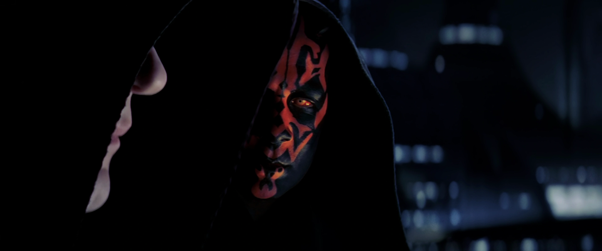
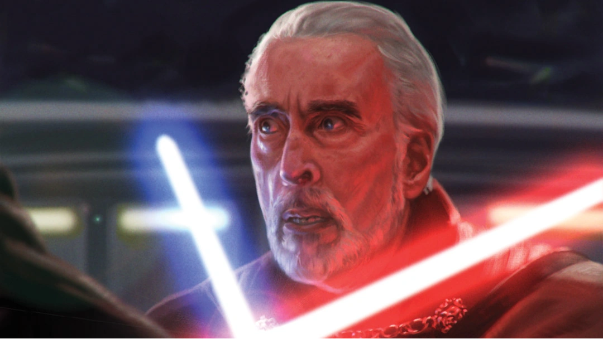
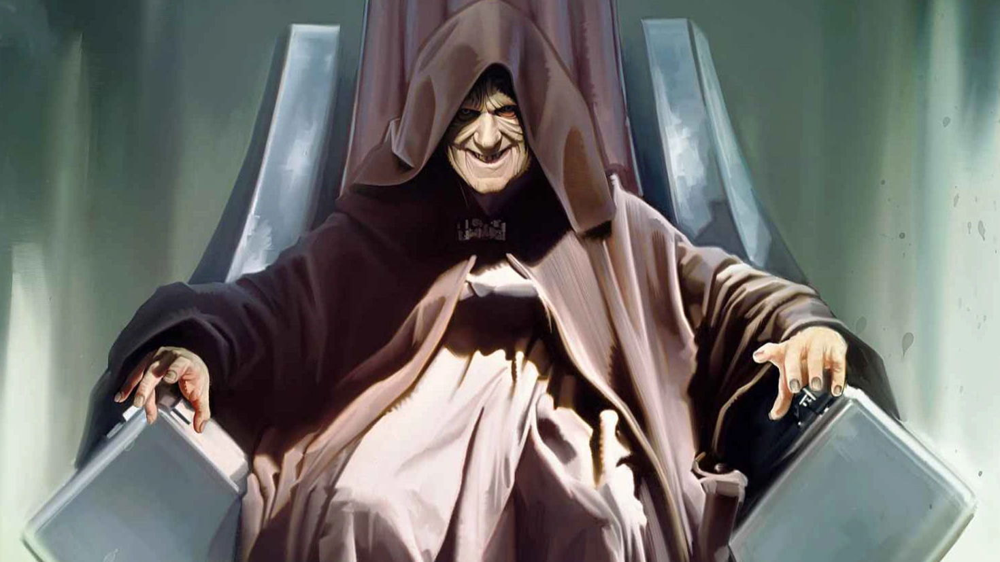
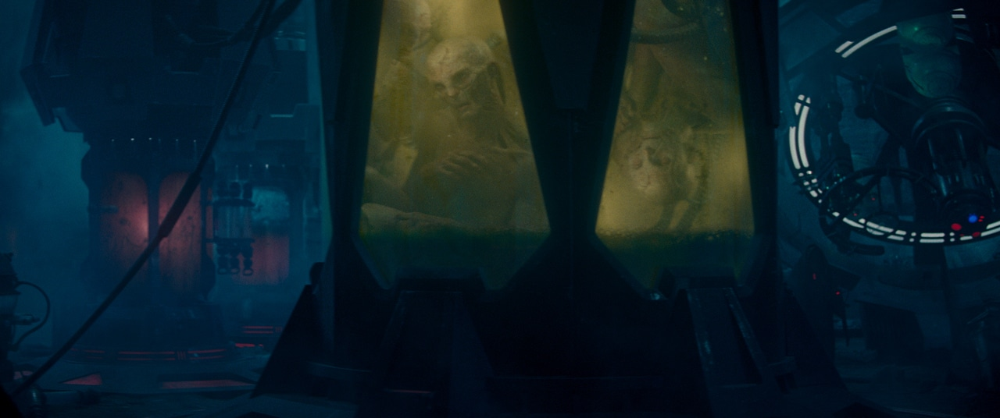
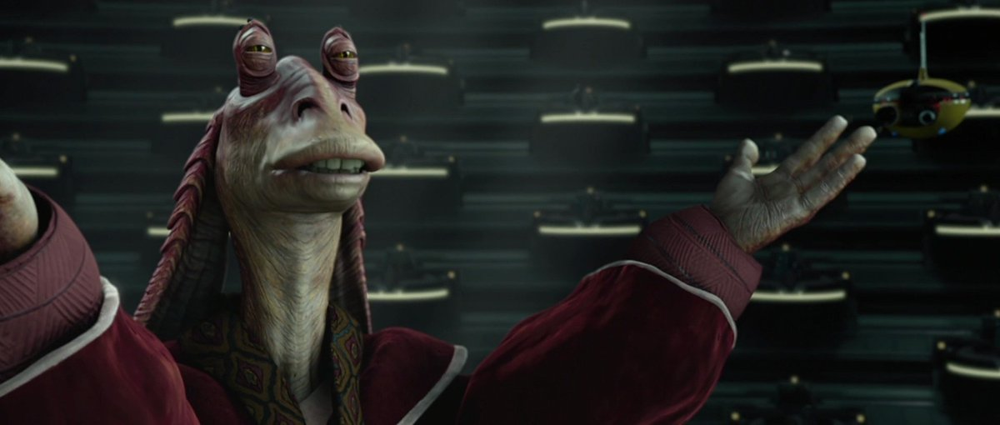
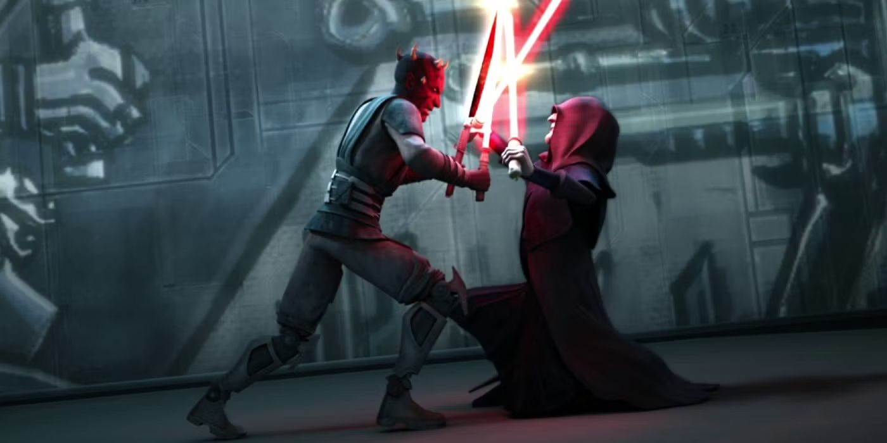

-
REPUBLIC IN CRISIS
The Phantom Apprentice
Born as Sheev Palpatine on the planet Naboo, Sidious was trained in the dark side of the Force by his Sith Master, Darth Plagueis. Under Plagueis's tutelage, Sidious honed his skills in manipulation, deception, and mastery of the dark side. After assassinating Plagueis in his sleep, Sidious adopted the Sith name Darth Sidious and began to execute his plans for galactic domination.
-
The Senator of Naboo
His public persona as Sheev Palpatine, Sidious took a great interest in politics and the public life of Naboo. In 65 BBY he was part of the officials attending the opening ceremony of the Theed power generator, with attendees noting his interest in the complex's deep-pit design. Keeping his Sith identity a secret from the public eye, Sidious took it upon himself to execute the Sith's long-percolating plan of supplanting the Republic with a new Sith Empire, as well as destroying the Jedi Order.
-
Training a Sith apprentice
Seeking a Sith apprentice, Sidious traveled to the planet Dathomir and met with the Dathomirian Nightsister Mother Talzin. Intermingling his knowledge of the dark side of the Force with Talzin's knowledge of Nightsister magicks, Sidious had considered to make Talzin his apprentice and right hand. However, Sidious chose her infant son, the Zabrak Nightbrother who would become his true Sith apprentice, Darth Maul.
 -
Invasion of Naboo
During the Invasion of Naboo, Sidious orchestrated the Trade Federation's blockade of the planet, using it as a pretext to manipulate the Republic into declaring war on the Separatist movement. This event marked a pivotal moment in his rise to power, as it allowed him to position himself as a key political figure within the Republic and further his agenda of destabilizing the government. His apprentice, Darth Maul, was sent to eliminate the Jedi Qui-Gon Jinn and Obi-Wan Kenobi, who were sent to negotiate an end to the blockade. Although Maul succeeded in killing Qui-Gon, he was ultimately defeated by Obi-Wan.
-
CLONE WARS
Clone Wars Mastermind
Sidious orchestrated the Clone Wars, a conflict between the Republic and the Separatist movement, using it as a means to consolidate his power and eliminate the Jedi. He manipulated both sides of the conflict, on one hand controlling the Republic as Chancellor Palpatine, and on the other hand leading the Separatists as Dooku's Sith Master. The war provided Sidious with the opportunity to implement Order 66, which led to the near-extermination of the Jedi Order and obliterated both sides of the conflict from the history books.
 -
REIGN OF EMPIRE
Emperor of the Galactic Empire
With the Jedi Order destroyed and the Republic in ruins, Sidious declared himself Emperor of the newly formed Galactic Empire. He established a totalitarian regime, consolidating power and suppressing dissent throughout the galaxy. Under his rule, the Empire implemented policies that prioritized order and control, often at the expense of individual freedoms. Sidious continued to manipulate events from behind the scenes, using his mastery of the dark side of the Force to maintain his grip on power and eliminate any threats to his reign.
-
Ghost of the Sith
Even after his apparent death at the hands of his former apprentice, Darth Vader, Sidious's influence continued to be felt throughout the galaxy. It was later revealed that he had been manipulating events from beyond the grave, using his knowledge of Sith alchemy and dark side rituals to extend his influence. During the events of the sequel trilogy, it was discovered that Sidious had been orchestrating the rise of the First Order and the return of the Sith, seeking to reclaim his position as the ultimate ruler of the galaxy.

Darth Sidious
The Dark Lord of the Sith who orchestrated the fall of the Republic and the rise of the Galactic Empire.
Early Life
Born as Sheev Palpatine on the planet Naboo, As a young man, Palpatine had traveled throughout the galaxy, collecting art, at least some of which was connected to the dark side, while doing so. Unaware docents would have written off his collection as junk, but Palpatine knew better. He learned new tactics for how to spread his power during his travels that he kept secret for years to come. Under the tutelage of his Sith Master, Darth Plagueis, Sidious honed his skills in manipulation, deception, and mastery of the dark side. Darth Sidious and Darth Plagueis worked together for years, trying to unlock the secrets to immortality, which was the obsession and longtime lust of Plagueis.
Imperial Rule
Sidious knew that to maintain his grip on power, he needed to create a sense of order and stability in the galaxy. He implemented policies that prioritized security and control, often at the expense of individual freedoms. Sidious established a vast bureaucracy to manage the affairs of the Empire, with loyalists placed in key positions of power. He also created a network of spies and informants to monitor dissent and eliminate potential threats to his rule. Shortly after the formation of the Galactic Empire, Sidious began constructing the Death Star, a massive space station capable of destroying entire planets. This weapon served as a symbol of his power and a tool for enforcing his will throughout the galaxy.

The Death Star, a symbol of Sidious's power and a tool for enforcing his will.
Dreams of immortality
Sidious was obsessed with the idea of immortality, and he spent much of his life searching for ways to extend his lifespan. He believed that the dark side of the Force held the key to eternal life, and he was willing to do whatever it took to achieve this goal. Ever since he killed his master Darth Plagueis in his sleep, Sidious had been searching for a way to cheat death. He experimented with various dark side rituals and alchemical processes, hoping to unlock the secrets of immortality. In the end, he created many defective clones of himself never quite achieving true immortality.
Cloning Tanks used by Sidious to create force-sensetive clones.
Political Ascendancy
Sidious's rise to power was perfectly crafted plan, with many moving parts that all worked together to mischief any potential mistrust. He orchestrated the failed assasination of Padme Amidala, which led to his election as Supreme Chancellor of the Galactic Republic, while pushing Jedi to discover Clone Army that he had secretly commissioned from the Kaminoans. His convoluted schemes created the perfect storm that allowed him to consolidate power and eliminate his enemies, all while maintaining the facade of a benevolent leader "I love democracy," he once said, "I love the Republic."
Jar Jar Binks, unwitting pawn in Sidious's rise to power.
Sith Philosophy
Sidious was a true believer in the Sith philosophy, which emphasized the pursuit of power and the rejection of traditional morality. He believed that the strong should rule over the weak, and that the ends justified the means. Sidious saw himself as a visionary leader, destined to bring order to a chaotic galaxy. He believed that the Jedi were a hindrance to progress, and that their destruction was necessary for the greater good. Sidious's philosophy was rooted in the belief that power was the ultimate goal, and that anything less was a weakness to be exploited.
Powers and Abilities
Among the abilities Sidious would use was Force lightning, which he used as both as a deadly attack and as a means of torture. He was also a master of lightsaber combat, able to hold his own against multiple opponents at once. Sidious was also skilled in the use of Sith alchemy and dark side rituals, which he used to create powerful artifacts and manipulate the Force in unique ways. His mastery of the dark side of the Force made him one of the most powerful Sith Lords in history, feared and respected by all who knew of him.
Darth Sidious fights Maul on Mandalore